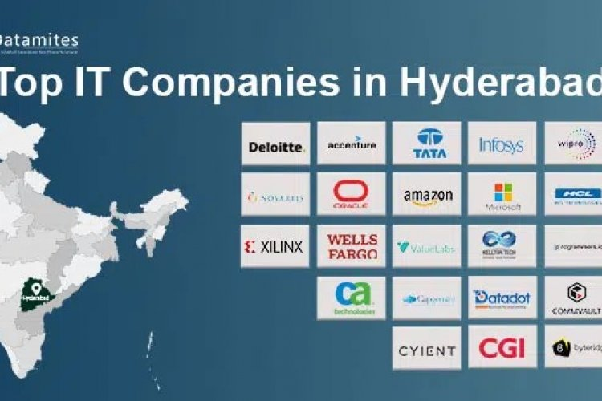

1. Microsoft
Website: www.microsoft.com
Location: Gachibowli, Hyderabad
Services: Cloud (Azure), enterprise software, AI
Career Information: Microsoft India careers — engineering and research
Hyderabad is a fast-growing IT hub, often called Cyberabad.

IT multinational companies in Hyderabad with location, services, and career details.
Hyderabad has become one of India's fastest-growing tech cities, with major IT parks in HITEC City, Gachibowli, and the Financial District hosting global MNC campuses.
Website: www.microsoft.com
Location: Gachibowli, Hyderabad
Services: Cloud (Azure), enterprise software, AI
Career Information: Microsoft India careers — engineering and research
Website: www.google.com
Location: Gachibowli, Hyderabad
Services: Cloud, search, advertising technology
Career Information: Google careers — software engineering positions
Website: www.amazon.com
Location: Financial District, Hyderabad
Services: AWS, e-commerce, device software
Career Information: Amazon jobs — SDE and support engineering
Website: www.apple.com
Location: Financial District, Hyderabad
Services: Maps development, software engineering
Career Information: Apple careers — selective technical hiring
Website: www.deloitte.com
Location: HITEC City, Hyderabad
Services: Consulting, audit, technology advisory
Career Information: Deloitte careers — consulting and IT roles
Website: www.accenture.com
Location: Madhapur, Hyderabad
Services: IT consulting, digital, BPO services
Career Information: Accenture careers — large-scale recruitment
Website: www.oracle.com
Location: HITEC City, Hyderabad
Services: Database, ERP, cloud applications
Career Information: Oracle careers — product and support teams
Website: www.qualcomm.com
Location: Gachibowli, Hyderabad
Services: Wireless chip design, 5G, mobile technology
Career Information: Qualcomm careers — hardware and software engineers
Website: www.infosys.com
Location: Pocharam, Hyderabad
Services: IT services, consulting, digital transformation
Career Information: Infosys careers — campus and experienced hiring
Website: www.techmahindra.com
Location: HITEC City, Hyderabad
Services: Telecom IT, digital services, outsourcing
Career Information: TechM careers — developer and analyst roles